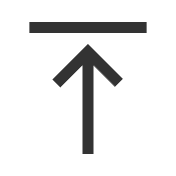

알림마당
등록일 2024.12.16
등록일 2024.12.03
등록일 2024.12.12
등록일 2024.12.10
등록일 2024.12.25
등록일 2024.12.17
미디어
경남 / 전남 / 전북 / 경북 총 4곳의 청년창업보육센터 소개 영상이 한국농업기술진흥원 유튜브 채널에 업로드 되었는데요! ...
생활플러스
농진원소식
주요사업
특허 창출, 기술 이전사업지원 및 치유농업 지원
농식품 창업 촉진 및창업성공률 제고
농식품 신속한 공급과우리종자산업 경쟁력 향상 지원
스마트농업 확산을 위한사업 추진
농업 자원·농생명 자원의신뢰도 있는 분석 서비스를 제공
농산업정보
스마트팜 도입과 운영을 위한 표준기술 및 다양한 정보를 제공합니다
농식품 벤처육성기업 농기자재 수출기업(AEA) 기술진흥사업기업
MOU 체결 기관과의 협력 현황 및 주요 내용을 자세히 안내합니다
농산업정보의 자료를 한곳에
21세기 농림축산식품 산업의 미래가치를 창출 NATI 농림축산식품 기술사업화 종합정보망
협력기관정보
분석검정센터
기술평가도움시스템
스마트그린푸드
농식품창업정보망
종자산업진흥센터
종자광장
농기계정보광장
농업기술사업화종합정보망
더보기 >